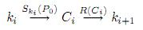

2.2.
Описание метода криптоанализа на основе Rainbow-таблиц
Криптографические
атаки основанные на полном переборе требуют много компьютерных
вычислений и много времени для выполнения. Тогда как одна и та же
атака осуществляется множество раз, имеется возможность выполнить
дополнительно полный перебор и сохранить результаты в памяти. Один
раз осуществив предварительное вычисление атака может осуществляться
практически мгновенно. Однако, этот метод недееспособен, так как
требуется крайне большой объём памяти. Хеллманом (Hellman) был
предложен метод размена «объём памяти — время атаки».
Для криптосистем, имеющих N ключей, данный метод восстанавливает ключ
за N^(2/3) операций используя N^(2/3) слов памяти. Типичное
применение этого метода — восстановление ключ при известных
открытом сообщении и соответствующем ему зашифрованном сообщении.
Другая область использования метода — хэши паролей
пользователей.
Размен «память
— время» является вероятностным методом. Успех не
гарантируется и уровень успешности зависит от времени и объёма
памяти, доступные криптоаналитику.
Исходный
метод на основе размена «память — время»
Имея заданное
открытое сообщение P0 и соответствующее ему зашифрованное
сообщение C0 необходимо найти ключ k (из множества
ключей N), который использовался для шифрования открытого
сообщения при помощи шифра S.
Мы
пробуем сформировать заранее все возможные зашифрованные сообщения
путём шифрования открытого сообщения используя при этом все возможные
ключи. Шифротексты организуются в цепочки, однако в память
сохраняются только первый и последний элементы цепочки. Цепочки
создаются используя функцию уменьшения R, которая создаёт
ключи из зашифрованных сообщений. Уменьшение вызвано тем, что
зашифрованное сообщение больше длины ключа. Таким образом,
генератором ключей выступает сам шифрующий алгоритм. Путём применения
шифра S и уменьшающей функции R формируются цепочки
различных ключей и шифротекстов.

Осуществление
последовательности операций шифрования и уменьшения R(Sk(P0))
записывается
как f(k)
и
приводит к формированию ключа из ключа, что приводит к созданию
цепочки ключей:
при
этом создаётся m
цепочек
длиной t
каждая
и их первый и последний элементы сохраняются в таблице.
Имея
шифрованное сообщение C
мы
пытаемся определить, находится ли неизвестный ключ, использованный
при создании C,
среди
тех, что использовались при создании таблицы. Для осуществления этого
мы формируем цепочку ключей начиная с R(C)
и
заканчивая при достижении длины в t
элементов.
Если шифротекст C
всё
таки был получен при помощи ключа, использованного при создании
таблицы, то мы, следовательно, можем сформировать ключ, совпадающий с
последним ключом цепочки. Этот последний ключ цепочки храниться в
таблице совместно с первым ключом цепочки. Используя первый ключ
цепочки из таблицы восстанавливаем внутреннее содержание цепочки и,
соответственно, ключ, предшествовавший операции R(C).
Это
ключ, который использовался для формирования C,
т.е.
ключ, который мы ищем.
Таким
образом, поиск секретного ключа осуществляется в два этапа:
1.
Зная шифр и имея известные открытое сообщение и закрытое сообщение
осуществляем работу шифра в режиме обратной связи, когда выходное
значение шифра подаётся (после уменьшения) на его вход в качестве
ключа шифрования. При этом открытое сообщение остаётся фиксированным.
После каждой операции шифрования получаем новый ключ цепочки, который
сравниваем с ключами, хранящимися в таблице.
2.
Если полученный ключ цепочки совпадает с ключом из таблицы, то
восстанавливаем внутреннее содержание цепочки из таблицы (зная первый
и последний элемент) и таким образом находим неизвестный секретный
ключ.
Проблемы
исходного метода на основе размена «память — время»
К сожалению
существует вероятность того, что цепочки, начинающиеся с различных
ключей в какой-то момент совпадут и станут одинаковыми (неразличимы).
Это является следствием того, при организации обратной связи
уменьшающая функция R осуществляет сужение пространства
шифротекстов в пространство ключей. Чем больше таблица, тем выше
вероятность того, что новые цепочки сольются с одной из предыдущих.
Каждое слияние уменьшает количество различных ключей, которое может
покрывать таблица. Шанс найти неизвестный секретный ключ при
использовании таблицы, состоящей из m строк и t ключей
составляет
Эффективность
одиночной таблицы значительно уменьшается с увеличением её размера.
Для получения высокой вероятности срабатывания метода наиболее лучшим
средством является формирование множества более маленьких таблиц, с
использованием для каждой таблицы своей уменьшающей функции.
Вероятность успеха при использовании l таблиц составляет:
Цепочки различных
таблиц могут совпадать, но не сливаются благодаря использованию
различных функций уменьшения для каждой таблицы.
Ложные
срабатывания
Когда
осуществляется поиск ключа по таблице, обнаружение совпадения с
конечной точкой предвычесленой цепочки не обязательно означает, что
искомый секретный ключ находиться в таблице. Также, секретный ключ
может быть частью цепочки, которая имеет такую же конечное значение,
но не содержится в таблице. В этом случае восстановление табличной
цепочки по заданному началу и концу не приведёт к обнаружению
секретного ключа. Такое явление называется ложным срабатыванием
(false alarm). Ложные срабатывания также случаются когда искомый ключ
содержится в табличной цепочке, но цепочка сливается с другой
табличной цепочкой. В этом случае несколько цепочек, имеющих
различные начальные значения и одинаковые конечные значения, должны
быть обработаны отдельно для точного определения искомого секретного
ключа.
Более
эффективная структура таблиц
Основным
ограничением оригинального метода является тот факт, что когда две
цепочки (в одной таблице) совпадают в каком-то месте, то происходит
слияние этих цепочек, то есть, после этого места они становятся
одинаковыми. Philippe Oechslin предложил новый тип цепочек, которые
могут совпадать в некоторых местах, но при этом не сливаются (не
становятся одинаковыми).
Такие цепочки
были названы автором радужными цепочками (rainbow chains). Они
используют различные уменьшающие функции для каждой
точки цепочки. Таким образом, совпадение элементов цепочек приведёт к
слиянию в том случае, если совпадение произошло в одинаковых
позициях обеих цепочек. Если совпадение произошло в различных
позициях, то формирование цепочек продолжиться с различных
уменьшающих функций и , соответственно, не приведёт к слиянию. Для
цепочек, состоящих из t элементов, при возникновении
совпадения в какой-либо позиции шанс слияния равен значению 1/t.
Вероятность успеха в пределах одной таблицы размерности m x t
определяется выражением:
где
m1 = m и

Интересно
то, что вероятность успеха для радужных таблиц имеет прямую
зависимость с вероятность успеха для классических таблиц. Вероятность
успеха t классических таблиц размерностью m x t
приблизительно соответствует вероятности успеха одиночной радужной
таблицы размерностью mt x t. В обоих случаях таблицы содержат
mt^2 ключей, полученных с использованием t различных
уменьшающих функций.
Радужные цепочки
имеют следующие преимущества:
количество
просмотров таблицы уменьшено в t раз по сравнению с
классическим методом Hellmana;
слияние
радужных цепочек приводит к появлению одинаковых конечных значений,
что легко обнаруживаемо. Поэтому, радужные цепочки могут
использоваться для формирования таблиц, не имеющих сливающихся
цепочек;
радужные
цепочки не имеют циклической структуры, так как каждая уменьшающая
функция используется в цепочке один раз. Это увеличивает скорость,
так как не происходит лишняя обработка цепочек с циклической
структурой;
радужные
цепочки имеют фиксированную длину, что приводит к уменьшению
количества ложных срабатываний.
Ниже приведена
статистика крупного интернет-проекта по восстановлению паролей
пользователей с использованием радужных таблиц
[http://www.freerainbowtables.com/]
Статистика взята
24 сентября 2008 г., цифры указанные в ней говорят об высокой
востребованности приведённого выше метода.
Stats
Active
machines 1246
Online
machines 383
Current
CPU power 1609 GHZ
Last
24 hours
3760 million
chains
Current
speed 44167 chains per second
Data
growth 56.03 GB
Cracked
hashes 39280
MD5
32897
NTLM
4900
LM
1483
Uncracked
hashes 41135
MD5
33597
NTLM
6232
LM
1306
Success
rate 48.85%
MD5
49.47%
NTLM
44.02%
LM
53.17%
Most
popular password
test
(151 times)
Cracking
queue size
253